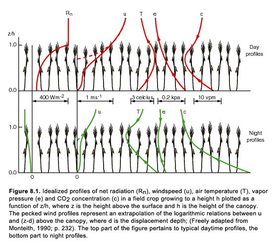

Home
Home

Now that we are somewhat familiar with the concept of a vegetation canopy, let us drop into that canopy to examine its microclimate. In so doing, we shall introduce two new ideas: The first, which is non-controversial, is that the structure and density of the plant canopy can influence the plant microclimate. The second, which is not accepted by all scientists, is that an ensemble of plants can compensate for increased atmospheric demand for water vapor by modifying its canopy environment. In the next two chapters we shall examine some possible negative feedback mechanisms that allow the plant to compensate for excessive atmospheric demand or even for a change in its own physiological makeup. We shall begin with the vertical structure of the temperature, wind, and water vapor content inside the plant canopy and try to understand what factors are important in affecting the canopy climate.
Before exploring the consequences for the internal feedback mechanisms in the plant microenvironment, we would like to present an abridged discourse on the subject of photosynthesis, courtesy of an old biology textbook (Hardin, 1966; pp 231-232). We feel that some background information on this plant process is useful, if not essential, for understanding this and subsequent scenarios. Any decent biology book should provide the same information.
Photosynthesis
Before the early eighteenth century, scientists believed that plants received all their nourishment from the soil. Later, it was understood that their nourishment was derived from the atmosphere and that light was an integral part in the process. A Swiss minister named Senebier showed late in the 18th century that CO2 + H2O + light energy yields O2 + plant material. Thus, light and water are necessary to convert carbon dioxide into sustenance for the plant.
Later, investigators realized that the material being formed in the plant consisted of carbohydrates, whose chemical formulae contains combinations of carbon and hydrogen atoms. The production of carbohydrates, however, occurs only within the green areas of the leaves, in cellular bodies called chloroplasts. The chloroplasts contain a chemical compound called chlorophyll, which exists in a variety of similar forms. Chlorophyll is required if photosynthesis is to take place.
If a chlorophyll molecule is exposed to light, excited electrons are captured and used to synthesize molecules, such as adenosine tri phosphate (ATP), which is used 'to fuel' chemical reactions in the plant. (Incidentally, ATP is also used in human cells and is an essential, though limited, fuel burned withinthe muscles that enables atheletes to achieve high performance.) A second series of reaction involves the splitting of water molecules, a process aided by the presence of the chlorophyll where a compound nicotinamide adenine dinucleotide (NADPH) is the end product. These reactions are part of the light reactions of photosynthesis. Rather than become ensconced in details you should simply consider the role of these compounds as sources of energy along the pathways in the synthesis of carbohydrates.
The photosynthetic process is not fully realized until the amount of organic carbon in the cell is increased. This is done by coupling CO2 (inorganic carbon) with organic compounds, reactions called dark reactions (because they do not require sunlight), which produce a variety of constituents in the plant cell (essentially carbohydrates). For your information, there are three pathways that photosynthesis can follow: C- 3, C- 4 and CAM (crassulacean acid metabolism).
Although plants generally intake carbon dioxide and exhale oxygen, some reactions liberate carbon dioxide, and it is passed back into the atmosphere. This exhalation is called respiration; respiration that occurs without the aid of sunlight is called dark respiration. Generally, the amount of carbon dioxide respired to the atmosphere is small compared to that taken up by the plant. However, dark respiration can occur at night, resulting in a rise in ambient carbon dioxide concentration in the plant canopy. An even more important source of carbon dioxide in the plant canopy is produced as a by-product when dead plant material decays. Since the latter type of reaction can also occur at night, the night time concentrations of carbon dioxide inside the canopy sometimes rise to levels above normal daytime concentrations, as shown for the CO2 nighttime profile in Figure 8.1. We will have more to say about this in a later scenario.

It doesn't take a meteorologist to realize that wind speed increases with height and that temperature decreases with height away from a surface heated by the sun, whereas at night, the temperature increases with height away from a surface through radiative cooling. However, let's consider what happens inside a plant canopy during the day and at night.
Windspeed
If we were to plot time-averaged wind speed versus the log of height, the profile would tend to be a straight line. In linear space, this distribution of wind speed is shown by the dashed lines on the wind speed profiles in a Figure 8.1. The height at which the time-averaged wind speed extrapolates to a zero wind speed is called the roughness height, a parameter you may have already encountered. The higher the vegetation, the larger the roughness height. In general, agronomists take the roughness height to be about 0.1 the height of the vegetation, for a uniformly distributed vegetation canopy. Agronomists also refer to a displacement height (h), which is the height above the ground surface that the logarithmic wind profile 'sees' as the ground surface; this is typically about two-third's the height of a uniform vegetation canopy. Therefore, to calculate at what level the roughness height of a 1 meter canopy is, you must first account for what the atmosphere sees as the ground surface, which would be 2/3 of 1 meter, for a displacement height of .667 meters. Then, the roughness height, which is .10 of 1 meter, would correspond to .10 meters above the .667 level, or .777 meters above the actual ground surface. Keep in mind that the actual roughness height is still .10 meters, but with respect to what the atmosphere sees as the ground, which is now .667 meters. (Note: although we talk of roughness and displacement heights in the context of vegetation, these parameters are generally applicable to any type of surface and the roughness height requires specification in the model.)
Some care should be taken in interpreting roughness height. First, it should be understood that the parameter, while related to the physical surface, is only a constant of integration in the log profile law. Second, it is possible for two or more roughness lengths to exist at one surface location, but each roughness length may apply to a different scale. Third, the roughness of a sparse crop canopy can be greater than that of a dense canopy because the latter tends to appear as a smoother surface to the ambient wind. Thus, a very dense canopy of soybeans may appear to the atmosphere as a fairly smooth surface, whose roughness elements consist only of the leaves protruding above a relatively uniform surface, whereas a canopy of sagebrush with the same height as the soybeans may appear as a much rougher surface to the atmosphere.
Except for the concept of the friction velocity, the logarithmic profile laws, such as those used in this model, do not apply immediately above or inside a vegetation canopy. Therefore, we need not worry about displacement height, except for the fact that Monteith (1990; p. 232) refers to it in his discussion of Figure 8.1; taken from his book. In actuality, the wind speed does not quite go to zero inside the canopy; instead it reaches a relatively small value in the upper third of the vegetation canopy and then decreases very slowly with decreasing height; this is illustrated by the solid curves in the wind speed profiles in Figure 8.1. The value of the wind speed in the slowly decreasing regime is nevertheless a function of the so-called friction velocity, which is a function of the wind speed above the canopy (at the top of the surface layer) and the roughness height.
Temperature
During the day, temperature is maximized at the earth's surface and during the night it is minimized. This is also true for vegetation canopies, although the maximum temperature tends to occur near the top of the vegetation, as shown in Figure 8.1. This is due to shading of the underlying soil, as the soil surface temperature tends to be cooler than the canopy temperature (or that just above the canopy) during the day.
Up to this point, you have plotted the 'surface radiant' and 'surface air temperatures' in your scenarios. Surface radiant temperature is relatively easy to imagine for a smooth, bare soil surface, but for vegetation the surface temperature becomes an abstraction. As we define it, it is the equivalent temperature of the ground, i.e., the temperature corresponding to the amount of upwelling long wave (thermal) radiation from the surface. Another important temperature that the model can calculate is the leaf temperature (Tl), which is that appropriate to a sunlit leaf near the top of the canopy. The interleaf air temperature (Taf) is calculated as a function of this temperature, the air temperature above the canopy, the ground temperature, as well as being a function of various air resistances. We can, therefore, take account of six temperatures in the vegetation scenarios: the interleaf air space temperature (Taf), the ground surface temperature (Tg), the temperature just above the canopy (i.e. at screen height; Ta ), the radiometric surface temperature (To), the leaf temperature (Tl), and the temperature at the top of the surface layer (50 m). (Let us not confuse these temperatures with potential temperature.)
Level 1
Simulation # 1
Vary the relative humidity near the surfacea) Run the default vegetation case for the corn canopy (LAI = 3, canopy height = 2 m, fractional vegetation cover = 100%, roughness height = .20 m), but this time note the distribution of wind speed, temperature and specific humidity (vapor pressure) inside and above the canopy. For wind speed, temperature, and specific humidity, look at three values: that at the top of the surface layer (50 m), anemometer level (10 m) and that inside the canopy (the interleaf air spaces). In addition, plot the vapor pressure deficit in the canopy.
b) Now, change the relative humidity in the initial temperature-dewpoint sounding. Increase the dewpoint depression by some factor (say 2.0) at the lowest three levels, thus lowering the relative humidity in the lower layers. Then, decrease the VPD by a factor of about two. This can be done by changing the dewpoints in the lower part of the sounding in some sensible fashion. Compare the same temperature, moisture, and wind speeds as above. Note how the specific humidity and the vapor pressure deficit change at 50 meters and in the canopy with this change in external relative humidity. Note that the evaporation formula suggests that doubling the numerator or denominator (the VPD) should cause evapotranspiration to increase by a factor of two.
Questions
Simulation #2
Vary the resistances inside and outside the canopyKeep the same graphs up from simulation 1 to compare to those generated here.
a) Using the same dewpoint depressions as simulation 1, reduce the wind speeds by a factor of two at all levels in the sounding. This effectively increases surface layer resistances. As you have already discovered in an earlier scenario for bare soil, decreasing surface roughness also causes an increase in the surface layer resistances. (Alternately, you can produce the same effect by decreasing the surface roughness (say by a factor of 10 or 20); if you wish to do this instead of changing the wind feel free to do so). This will increase all resistances external to the plant, including the leaf boundary layer resistance (raf) and the resistance between the canopy and the surface layer.
b) Next, reduce the leaf width by a factor of four (to 0.02 m); this will decrease the leaf boundary layer resistance by about a factor of 2 but not affect the other resistances to heat and water vapor. What we have effectively done here is increased the resistances outside the plant canopy while lowering those within. According to McNaughton and Jarvis, we are decreasing the ratio of leaf stomatal to boundary layer resistance as well as decreasing the ratio of canopy to surface layer resistance. Think about what has happened to the amount of mixing within the canopy compared to above
Again, note the relevant parameters, especially humidity, and how they change. See if the changes in canopy temperature and humidity are as extreme as when you reduced the relative humidity in the higher wind regime and with the larger leaf size (the base case).
Questions
Level 2
a) Find optimal conditions for canopy decoupling
Play around with the wind speed (or roughness length), leaf size, and initial relative humidity on the sounding to see whether you can find optimum buffering, i.e., a situation in which a change in ambient relative humidity is not reflected (or weakly reflected) by changes in the canopy relative humidity due to internal feedback. If you do find it, reduce the LAI and note how rapidly the effect diminishes with decreasing canopy density. Try and get a feel for how dense our corn canopy must be to effectively decouple from the atmosphere above under ideal conditions. We are not sure whether such a buffering (as predicted by Jarvis and McNaughton, 1986 and later by McNaughton and Jarvis, 1991) can actually be found in the model, or whether it even occurs in nature, but we are very curious to learn under which conditions auto-humidification can be induced. Good hunting!
b) So far, we have been examining variations in our default corn canopy. Now, try changing the type and characteristics of the vegetation canopy itself. For example, change the crop type, canopy height (and roughness length), fractional vegetation cover, etc. See if the 'optimal conditions' for decoupling you found in (a) also work for other types of vegetation, or are there new optimal conditions for each variation. Be creative and only change one variable at a time as to not get too confused. See if there is also an optimal canopy height, crop type, etc. for which the canopy decouples (is buffered from atmospheric or other external changes) most readily. You may also want to view the effects of changing these parameters on the surface radiant temperature, because they all have a direct impact on the amount of sunlight which can penetrate the soil surface.
Level 1 Simulation 1 | Level 1 Simulation 2 | Level 2
feedback
chlorophyll
chloroplast
ATP
NADPH
C- 3, C- 4 and CAM
respiration
dark respiration
light reaction
dark reactions
friction velocity
displacement height
auto humidification (our term)
dewpoint depression
The clear message from the above arguments is that the importance of stomatal control of transpiration depends on the amount of environmental feedback. At the leaf and canopy scales, the gain of the negative feedback loops describing temperature and humidity gradients through the leaf boundary layers and atmospheric surface layer depends on the ratios of leaf stomatal to boundary-layer conductances and the canopy to surface-layer conductances. When these ratios are large, we need only crude models of stomatal responses, but when they are small, we need much better ones. How the stomata respond to leaf-surface saturation deficit will not matter much for a canopy of small aerodynamic roughness and large canopy conductance because the saturation deficit close to the leaves will not change much and such stomatal responses as do occur will have only a small effect on transpiration anyway.
At regional scale, the force of these arguments increases, and even the leaf and surface-layer aerodynamic conductances have little effect when gc1 > 20 mm s-1 because then the dominant negative feedback is by way of processes in the whole planetary boundary layer. A corollary is that there is no practical justification for using any canopy model more complex than the 'big- leaf' model at this scale for areas dominated by highly productive agricultural crops. This is doubly true given the difficulties of average canopy conductance across a mosaic of different fields.